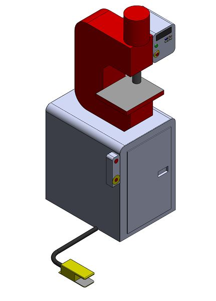
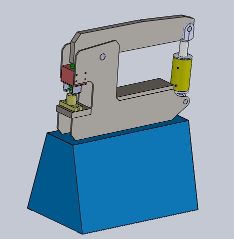
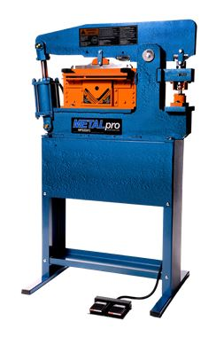

Productos
Prototipo - Primer Prensa Hidraulica Multipropósito - Modelo PH 25

Cortadora de Perfiles - Modelo CH 40


Este es un producto orientado al sector pyme metalúrgico, que requiere una herramienta robusta, capaz de realizar múltiples tareas con simples o nulos ajustes, y que a su vez sea de fácil operación. Con capacidad de trabajar a altos ritmos por periodos más o menos cortos. La matricera estándar con la que se equipa la máquina, sirve para casi cualquier trabajo. Pudiendo fabricarse variaciones para trabajos especiales